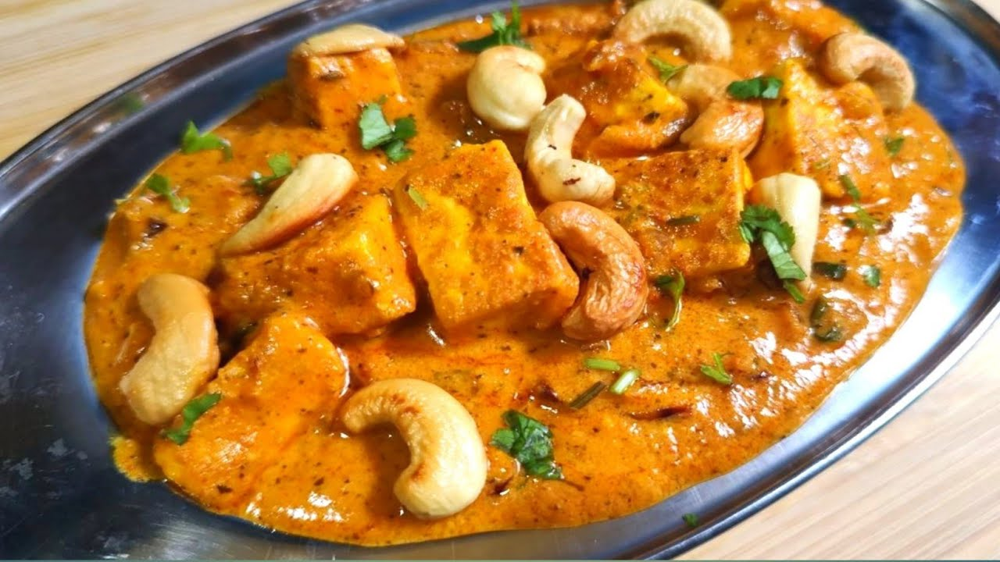

Kaju-paneer
Home

Description
Kaju Paneer is a rich and comforting North Indian curry made with tender cubes of paneer (Indian cottage cheese) and buttery cashews in a silky tomato-onion gravy. The cashews are either added whole for a pleasant bite or blended into a paste, giving the sauce its signature creaminess and slightly sweet, nutty flavor. Spices like cumin, garam masala, and mild chili blend with the tang of tomatoes to create a balanced dish that pairs perfectly with naan, roti, or steamed rice. Its smooth texture, mild heat, and luxurious taste make it a favorite for special occasions as well as cozy weekend meals.
Nutritionally, Kaju Paneer offers a good mix of protein from paneer, healthy fats and minerals like magnesium, zinc, and copper from cashews, plus calcium and phosphorus for bone health. Tomatoes and herbs contribute vitamin C and antioxidants, while the healthy fats provide lasting satiety. It’s a calorie-dense, nutrient-rich dish — great for energy and recovery if eaten in moderation. By using roasted cashews, reducing cream, and pairing it with fiber-rich sides, you can enjoy its flavor and benefits while keeping it balanced.
Ingredients:
- Paneer (Indian cottage cheese) – 200–250 g, cut into medium cubes
- Cashews (kaju) – 15–20 whole, plus 8–10 more for grinding into paste
- Tomatoes – 2 medium (ripe, red) or 150 g, roughly chopped
- Onions – 1 medium, roughly chopped
- Green chili – 1 small, slit (optional, for mild heat)
- Ginger – 1-inch piece
- Garlic – 3–4 cloves
Spices
- Cumin seeds – ½ teaspoon
- Turmeric powder – ¼ teaspoon
- Red chili powder – ½ teaspoon (adjust to taste)
- Coriander powder – 1 teaspoon
- Garam masala – ½ teaspoon
- Salt – to taste
Liquids & fat
- Oil or ghee – 1½ tablespoons (use ghee for richer flavor)
- Fresh cream – 2 tablespoons (can substitute with cashew paste or milk for lighter version)
- Water – as needed for gravy consistency
Recipe
- Prep the cashews
- Soak 8–10 cashews in warm water for 15 minutes (for paste).
Keep 15–20 whole cashews aside for garnishing or cooking whole.
- Make the cashew paste
- Drain the soaked cashews.
Blend them with 2–3 tablespoons of water into a smooth, creamy paste.
- . Fry or roast whole cashews
- Heat ½ teaspoon ghee or oil in a small pan.
Lightly roast the whole cashews until golden. Remove and set aside.
- Make the base gravy
- eat 1 tablespoon oil or ghee in a pan.
Add ½ teaspoon cumin seeds — let them splutter.
Add 1 chopped onion, 3–4 garlic cloves, and 1-inch ginger (finely chopped).
Sauté until onions turn light golden.
- Add tomatoes & spices
- Add 2 chopped tomatoes and 1 slit green chili (optional).
Add ¼ tsp turmeric, ½ tsp red chili powder, 1 tsp coriander powder, and salt to taste.
Cook until tomatoes turn soft and oil starts to separate.
- Blend the masala
- Let the mixture cool slightly.
Blend into a smooth paste with a splash of water.
(This step ensures a creamy restaurant-style texture)
- Cook the gravy
- Return the blended mixture to the pan.
Add cashew paste and about ½ cup water (adjust to desired consistency).
Stir well, bring to a gentle simmer.
- Add paneer & whole cashews
- Gently add 200–250g paneer cubes and the roasted cashews.
Mix carefully to avoid breaking the paneer.
- Add finishing flavors
- Stir in 2 tbsp fresh cream (or more for richer taste).
Add ½ tsp garam masala and ½ tsp crushed kasuri methi.
Simmer for 2–3 minutes on low heat.
- Serve
- Garnish with fresh coriander leaves.
Serve hot with naan, roti, or steamed basmati rice.